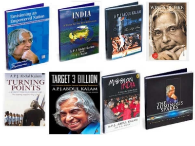

Biography Of Abdul Kalam
Writing Of Abdul Kalam

In his book India 2020, Kalam strongly advocated an action plan to develop India into a
"knowledge superpower" and a developed nation by the year 2020. He regarded his work on India's
nuclear weapons programme as a way to assert India's place as a future superpower.
Kalam describes a "transformative moment" in his life when he asked Pramukh Swami,
the guru of the BAPS Swaminarayan Sampradaya, how India might realise this five-pronged vision of development.
Pramukh Swami's answer—to add a sixth area developing faith in God and spirituality to overcome the current
climate of crime and corruption—became the spiritual vision for the next 15 years Kalam's life,
which he describes in his final book, Transcendence: My Spiritual Experiences with Pramukh Swamiji,
published just a month before his death.
It was reported that there was considerable demand in South Korea for translated versions of books
authored by him.Kalam took an active interest in other developments in the field of science and technology,
including a research programme for developing biomedical implants. He also supported open source technology
over proprietary software, predicting that the use of free software on a large scale would bring the benefits
of information technology to more people.
Kalam set a target of interacting with 100,000 students during the two years after his resignation
from the post of scientific adviser in 1999.[21] He explained, "I feel comfortable in the company of
young people, particularly high school students. Henceforth, I intend to share with them experiences,
helping them to ignite their imagination and preparing them to work for a developed India for which the
road map is already available." His dream is to let every student to light up the sky with victory using
their latent fire in the heart.